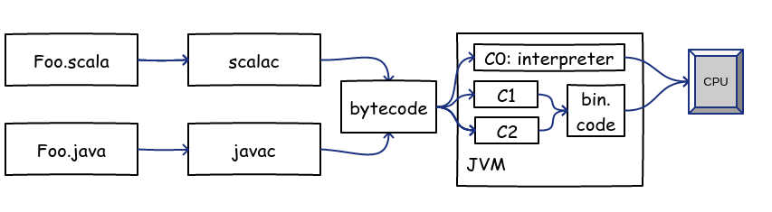

Is scala code slow?
Grebennikov Roman  Findify
Findify
scala.io / 2016
Intro: cool things
|
|
Intro: hot cool things
Scala & code hot spots:
- More readable
-
Less predictable:
- create new objects
- do unexpected computations
- surprize JVM
Agenda
Basics:
- Performance measuring is hard
- What JVM & scalac do with your code
- JMH & how to measure
wrongright
Agenda
Real life:
- Pattern matching
- Recursion
- Collections
Is benchmarking really hard?
val start = System.currentTimeMillis()
for (i <- 0 to 1000) yield doSomeStuff()
val perf = (System.currentTimeMillis() - start) / 1000.0
- loop can be eliminated by optimizer
- doSomeStuff() can be interpreted, not compiled
- the whole loop may take less than 1ms
- ... and many more
HotSpot JVM is smarter than you
Hit the compile button
Hit the compile button
Hit the compile button
Hit the compile button

Hit the compile button
Hit the compile button
-
C0 ⟶ C1 ⟶ C2
- more agressive: code is faster
- more time for warm-up
- Pitfalls everywhere
Need reliable result?
|
Avoid all the traps:
|

|
Meet JMH
Harness for implementing & running [micro] benchmarks.
sbt-jmh plugin for easy scala integration:
package io.scala
import org.openjdk.jmh.annotations._
class Demo {
@Benchmark
def helloWorld = 42
}
JVM performance testing: deep dive
-
Alexey Shilipev talks & blog posts:
- Performance methodology how-to
- Java benchmarking: timestamping failures
- Nanotrusting the nanotime
- JMH code samples
Pattern matching
Problem
trait Base
class Foo extends Base
class Bar extends Base
class Baz extends Base
// which class does implement Base?
def select(value:Base) = ???
If vs pattern matching
@Benchmark
def measurePatMat = input match {
case _:Foo => 1
case _:Bar => 2
case _:Baz => 3
case _ => 4
}
@Benchmark
def measureIf = if (input.isInstanceOf[Foo])
1
else if (input.isInstanceOf[Bar])
2
else if (input.isInstanceOf[Baz])
3
else
4
Results
Benchmark (classType) Mode Cnt Score Error Units
ScalaTypeMatch.measureIf foo avgt 100 3.491 ± 0.025 ns/op
ScalaTypeMatch.measureIf bar avgt 100 4.065 ± 0.016 ns/op
ScalaTypeMatch.measureIf baz avgt 100 4.167 ± 0.022 ns/op
ScalaTypeMatch.measurePatternMatch foo avgt 100 3.484 ± 0.020 ns/op
ScalaTypeMatch.measurePatternMatch bar avgt 100 4.058 ± 0.008 ns/op
ScalaTypeMatch.measurePatternMatch baz avgt 100 4.168 ± 0.015 ns/op
Results
Benchmark (classType) Mode Cnt Score Error Units
ScalaTypeMatch.measureIf foo avgt 100 3.491 ± 0.025 ns/op
ScalaTypeMatch.measureIf bar avgt 100 4.065 ± 0.016 ns/op
ScalaTypeMatch.measureIf baz avgt 100 4.167 ± 0.022 ns/op
ScalaTypeMatch.measurePatternMatch foo avgt 100 3.484 ± 0.020 ns/op
ScalaTypeMatch.measurePatternMatch bar avgt 100 4.058 ± 0.008 ns/op
ScalaTypeMatch.measurePatternMatch baz avgt 100 4.168 ± 0.015 ns/op
Machine code to the rescue
- Shows all the truth
- Only the brave can read it
Want some x86_64?
- -XX:+PrintAssembly: dump all the compiled methods: TL&DR
- perf: Linux CPU perf counters: too low level
- JMH perfasm: combines both, made for humans: OK

I want my scala back!
Inside pattern matching
mov 0x10(%r8),%r10d ;*getfield someClass
mov 0x8(%r12,%r10,8),%ecx ;*instanceof
cmp $0xf8019288,%ecx ; {metadata('ru/jugvrn/ScalaTypeMatch$Foo')}
je 0x00007f3e0d222734 ;*ifeq
cmp $0xf8019306,%ecx ; {metadata('ru/jugvrn/ScalaTypeMatch$Bar')}
je 0x00007f3e0d222761 ;*ifeq
cmp $0xf8019248,%ecx ; {metadata('ru/jugvrn/ScalaTypeMatch$Baz')}
jne 0x00007f3e0d22281d ;*instanceof
...
callq 0x00007f3e0d046020 ; *invokevirtual consumeInside if-else
mov 0x10(%r8),%r11d ;*getfield someClass
mov 0x8(%r12,%r11,8),%edx ;*instanceof
cmp $0xf8019288,%edx ; {metadata('ru/jugvrn/ScalaTypeMatch$Foo')}
je 0x00007faa4522ac3b ;*ifeq
cmp $0xf8019306,%edx ; {metadata('ru/jugvrn/ScalaTypeMatch$Bar')}
je 0x00007faa4522ac71 ;*ifeq
cmp $0xf8019248,%edx ; {metadata('ru/jugvrn/ScalaTypeMatch$Baz')}
jne 0x00007faa4522ad31 ;*instanceof
...
callq 0x00007faa45046020 ; *invokevirtual consumeSame x86_64 code!
pattern matching ~ if-else*
What about Options?
// match by Option
@Benchmark
def measureMatchOption() = someString match {
case Some(str) => str
case _ => "default value"
}
// null check
@Benchmark
def measureIfNull() = if (nullableString != null)
nullableString
else
"default value"Results
Benchmark Mode Cnt Score Error Units
ScalaOptionMatch.measureIfNull avgt 100 3.677 ± 0.035 ns/op
ScalaOptionMatch.measureMatchOption avgt 100 4.153 ± 0.066 ns/op
- Results are close, but null check is faster
- Why?
Inside nullcheck
mov 0x10(%r10),%r11d ;*getfield nullableString
test %r11d,%r11d
je 0x00007fb929230422 ;*ifnull
lea (%r12,%r11,8),%rdx ;*getfield nullableString
...
callq 0x00007fb929046020 ;*invokevirtual consume
Inside option matching
mov 0xc(%r10),%r11d ;*getfield someString
mov 0x8(%r12,%r11,8),%r8d ; implicit exception: dispatches to 0x00007f7be1233739
cmp $0xf80191cc,%r8d ; {metadata('scala/Some')}
jne 0x00007f7be1233711
lea (%r12,%r11,8),%r10 ;*instanceof
mov 0xc(%r10),%r11d ;*getfield value
mov 0x8(%r12,%r11,8),%r10d ; implicit exception: dispatches to 0x00007f7be1233749
cmp $0xf80002da,%r10d ; {metadata('java/lang/String')}
jne 0x00007f7be1233725
...
callq 0x00007f7be1046020 ;*invokevirtual consume
What's the difference?
- Null check: single branch
-
Match by Option: TWO branches
- TWO branches
- Option[T]: T is erased
- JVM cannot